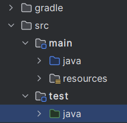

Bibliothèque de tests unitaire JUnit¶
Contenus de la page
4-3 Stratégies d'assurance qualité
Temps requis
20 minutes
À propos de la page
Pour réaliser des tests unitaires en java on utilise la bibliothèque JUnit (inclut aujourd'hui dans le projet Jupiter). Le fonctionnement est similaire à celui de NUnit dans l'environnement C#.
Les exemples de code de la page sont tirés du projet : Convertisseur mesures
Installation¶
Il faut indiquer la dépendance dans le fichier build.gradle pour inclure la bibliothèque JUnit.
dependencies {
testImplementation("org.junit.jupiter:junit-jupiter:5.14.0")
testRuntimeOnly("org.junit.platform:junit-platform-launcher")
}
tasks.test {
useJUnitPlatform()
}
Ajouter le module / répertoire des tests¶
Vos tests doivent être rassemblés dans un dossier pour contenir tous les tests. Vous pouvez le créer en sélectionnant l'option "test/java". Votre projet devrait être organisé de la sorte. Vos classes vont dans main/java tandis que les tests vont dans test/java.

Déclarer un test¶
Pour déclarer un test, il faut faire un nouveau fichier de test (classe kotlin) dans le répertoire test.

Les annotations¶
4 annotations de méthodes sont disponibles pour gérer l'exécution des tests
BeforeAll: méthode exécutée une fois avant tous les tests.BeforeEach: méthode exécutée avant chaque testTest: méthode contenant un testAfterEach: méthode exécutée après un test
Structure d'un test¶
public class ConvertisseurTest {
@BeforeEach
public void preparationTest() {
}
@Test
public void conversionIntraSysteme() {
}
Assertion¶
Une assertion consiste à vérifier une condition et à lever une erreur en cas de non-respect. Les méthodes prennent la forme :
assertEquals(valeur attendue, valeur réelle, message en cas d'erreur)
assertEquals(valeur attendue, valeur réelle, tolérance, message en cas d'erreur)
assertContains(tableau, valeur cherchée, message en cas d'erreur)
Dans cet exemple, on remarque l'utilisation de données factice pour illustrer les différents cas de conversion entre unités de mesure, tant intra-système qu'inter-système. Ces unités sont recréées entre chaque test grâce à la méthode preparationTest() afin d'éviter toute contamination entre les tests. Comme les tests sont sur une classe sans état, on aurait pu utiliser l'annotation @BeforeAll pour initialiser les données une seule fois avant tous les tests. Ce cas est toutefois rare.
Ensuite, 5 cas de tests dans des conditions différentes sont conduits, chacun testant un scénario spécifique de conversion entre unités de mesure, que ce soit au sein du même système ou entre systèmes différents.
Truc de math
Pour éviter les effets de bord entre les valeurs, des nombres sans facteur commun sont utilisés dans les tests. De cette façon, la contribution de chaque conversion est unique et ne peut pas être obtenue par une combinaison d'autres conversions.
Lancer des tests¶
Pour lancer les tests, il faut aller dans le menu gradle et sélectionner l'option verification/test. Les résultats des tests seront affichés dans la console, indiquant si chaque test a réussi ou échoué. Gradle découvre les tests en repérant les méthodes annotées avec @Test dans les classes de test, d'où l'importance d'utiliser le module de test distinct.